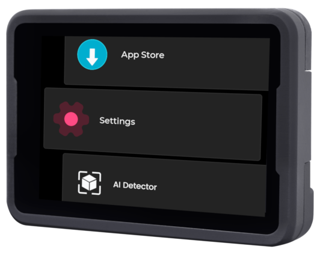
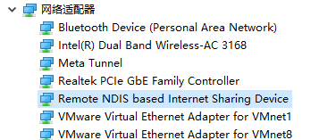
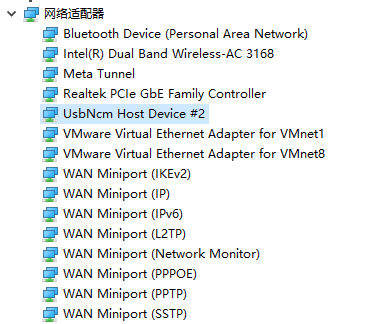

中文
中文MaixCAM MaixPy 快速开始
| 资源汇总 | 链接 |
|---|---|
| MaixPy 教程文档 📖 | wiki.sipeed.com/maixpy |
MaixPy 例程和源码  |
github.com/sipeed/MaixPy |
| MaixCAM 硬件资料 📷 | wiki.sipeed.com/maixcam / wiki.sipeed.com/maixcam-pro |
| MaixPy API 文档 📚 | wiki.sipeed.com/maixpy/api/ |
| MaixPy 视频和教程 💿 | B站搜 MaixCAM 或 MaixPy |
| MaixHub 应用商店 📦 | maixhub.com/app |
| MaixHub 分享广场 🎲 | maixhub.com/share |
关于 MaixPy 介绍请看 MaixPy 官网首页
喜欢 MaixPy 请给 MaixPy 项目 点个 Star ⭐️ 以鼓励我们开发更多功能。
写在前面
- 请仔细阅读按照下面文档的步骤，不要遗漏内容，对比进行操作。
- 左边目录请仔细查看，基础部分一定要耐心阅读完。
- 提问前先在左边目录仔细查找文档，以及看FAQ。
- 本文档是
MaixPy v4 教程文档，注意与 MaixPy-v1（k210系列）区别开，勿错看文档。 - 也可以参考下面的视频上手教程，注意视频内容有更正在评论区和弹幕会补充，以最新的文档为准，更多视频教程可以到 B 站搜索 MaixCAM。
获得 MaixCAM 设备
MaixCAM 主体，目前有几个版本，根据自己的需求买：
- MaixCAM-Pro（推荐）： 在 Sipeed 淘宝 或者 Sipeed 速卖通 店铺购买 MaixCAM-Pro。
- MaixCAM：在 Sipeed 淘宝 或者 Sipeed 速卖通 店铺购买 MaixCAM。
- MaixCAM-Lite（不推荐）: 无屏幕和外壳版本，价格更便宜，学习开发不建议购买，量产可以考虑购买。
TF 卡： 系统安装在 TF 卡，没有 TF 无法启动。
摄像头: 视觉相关应用需要摄像头，可以根据自己的使用场景和财力选择合适的摄像头型号。比如 OS01A10 成像质量比 GC4653 高。
触摸屏： 方便交互，官方默认集成的应用都需要触摸屏交互，可以大大提升交互体验和开发难度。
电源： 一个稳定的供电方式，MaixCAM 需要
5v 500mA的稳定供电，如果供电不足可能会导致无法开机，或者运行过程中死机等情况。特别是有些电脑的 USB 口供电可能不稳定。TF 读卡器: 用来烧录系统，必备。
USB转串口模块: 如果你想要电脑和 MaixCAM 之间串口通信，需要备一个，淘宝随便买一个就行，也可以直接在 Sipeed 店里一起买，比如这个双串口转USB模块。
注意，目前只支持 MaixCAM 系列开发板，其它同型号芯片的开发板均不支持，包括 Sipeed 的同型号芯片开发板，请注意不要买错造成不必要的时间和金钱浪费。
使用无屏幕版本
如果你使用的是无屏幕版本，请看快速开始（无屏幕版本）文档。
上手配置
准备 TF 镜像卡和插入到设备
如果你买的套餐里面有 TF 卡，里面已经有出厂镜像了，如果出厂时 TF 卡没有安装到设备，需要先小心打开外壳（注意里面有排线连接不要扯断了），然后插入 TF 卡。另外因为出厂的固件可能比较老旧，务必按照升级和烧录系统先将系统升级到最新版本，否则可能会遇到某些应用 和 API 无法使用的问题。
如果没买 TF 卡，则需要将系统烧录进自备的 TF 卡中，烧录方法请看升级和烧录系统，然后再安装到板子。
上电开机
使用 Type-C 数据线连接 MaixCAM 设备给设备供电，等待设备开机，开机会进入功能选择界面。

如果屏幕没有显示
- 请确认购买了配套的 TF 卡，如果确认有 TF 卡，并且已经插入到设备，可以尝试更新到最新的系统。
- 如果你没有购买 TF 卡套餐，你需要按照升级和烧录系统的方法烧录最新的系统到 TF 卡。
- 另外请确认屏幕和摄像头的排线没有松动，屏幕的排线在拆开外壳时很容易脱落，需要注意。
联网
首次运行需要连接网络，后面会激活设备和使用 IDE 会用到。
如果没有路由器可以用手机开一个热点。
设备上点击 设置(Settings)，选择WiFi，有两种方法连接 WiFi 热点：
- 扫描 WiFi 分享码：
- 使用手机分享
WiFi热点二维码，或者到maixhub.com/wifi 生成一个二维码。 - 点击
扫描二维码按钮，会出现摄像头的画面，扫描前面生成的二维码进行连接。
- 使用手机分享
- 搜索热点：
- 点击
扫描按钮开始扫描周围WiFi， 可以多次点击刷新列表。 - 找到你的 WiFi 热点。
- 输入密码点击
连接按钮进行连接。
- 点击
然后等待获取到 IP 地址，这可能需要 10 到 30 秒，如果界面没有刷新可以退出WiFi功能重新进入查看，或者在设置 -> 设备信息 中也可以看到 IP 信息。
升级运行库
这一步很重要 ！！！ 这一步如果不做好，其它应用和功能可能无法运行（比如闪退等）。
- 首先保证上一步连接 WiFi 已经完成，并且获取到 IP 地址能访问公网。
- 设备上点击
设置(Settings)，选择安装运行库。 - 安装完成后可以看到更新到了最新版本，然后退出即可。
如果显示Request failed 或者请求失败，请先检查网络是否已经连接，需要能连接到互联网，如果还不行，请拍照联系客服处理即可。
使用内置应用
内置了很多应用，比如 找色块，AI 检测器，巡线等等，自学习检测举例：
其它的请自行摸索，以后还会更新更多应用，使用文档以及应用更新请看 MaixHub 应用商店 。
注意：应用只包含了 MaixPy 能实现的一部分功能，使用 MaixPy 能创造更多功能。
作为串口模块使用
如果是想把设备当成主控使用（或者你还不懂什么是串口模块）可以跳过这一步。
内置的各种应用可以直接当成串口模块使用，比如找色块、找人脸、找二维码等等，
注意这里串口仅能直接和其它单片机连接，如果要和电脑串口通信请自备一个 USB 转串口模块。
使用方法：
- 硬件连接： 可以给设备接上
Type-C一转二小板（对于 MaixCAM-Pro 是 6Pin 接口），这样我们就能将设备通过串口连接到你的主控上了，比如Arduino、树莓派、STM32等等。 - 打开你想用的应用，比如二维码识别，当设备扫描到二维码就会通过串口把结果发送给你的主控了。
发送的串口波特率是
115200，数据格式是8N1，协议遵循 Maix 串口通信协议标准，可以在MaixHub APP 找到对应的应用介绍查看协议。
如果应用没有做串口输出结果，你也可以自己基于对应功能的例程，自行按照串口使用文档添加串口输出结果。
准备连接电脑和设备
为了后面电脑（PC）能和 设备（MaixCAM）通信，我们要让它们在同一个局域网内，提供了两种方式：
- 方法一 (强烈推荐)：无线连接， 设备使用 WiFi 连接到电脑连接的同一个路由器或者 WiFi 热点下： 在设备的
设置 -> WiFi 设置中连接到你的 WiFi 即可。（WiFi 如果出现画面卡顿或者延迟的问题可以尝试下面的方法二使用有线连接。） - 方法二：有线连接， 设备通过 USB 线连接到电脑，设备会虚拟成一个 USB 网卡，这样和电脑就通过 USB 在同一局域网了。推荐先用 WiFi 开始是因为有线虽然传输稳定但是可能会遇到线缆不良，接触不良，驱动等问题，遇到问题也可以在 FAQ 中找常见问题。
方法二在不同电脑系统中驱动安装方法：
默认会有两种 USB 虚拟网卡驱动（NCM 和 RNDIS驱动），以满足不同系统的需求，你也可以在设备端设置应用 -> USB设置 里面关掉不用的虚拟网卡：
- Windows: windows 所有系统会自动安装 RNDIS 驱动， 仅 Win11 会自动安装 NCM 驱动，两种驱动有一个能用就行。
- 打开任务管理器 -> 性能，可以看到一个虚拟的以太网，并且可以看到 ip 比如
10.131.167.100是电脑的 ip, 设备的 ip 是最后一位改为1即10.131.167.1。如果是 Win11 则会看到两个虚拟网卡，随便选择一个 IP 使用即可。 - 另外也可以打开电脑的
设备管理器（搜索栏搜索设备管理器）， RNDIS 和 NCM 驱动被正确安装的效果：
 
- 打开任务管理器 -> 性能，可以看到一个虚拟的以太网，并且可以看到 ip 比如
- Linux: 无需额外设置，插上 USB 线即可。 使用
ifconfig或者ip addr查看到usb0和usb1网卡，两个 IP 都可以使用，注意 这里看到的 ip 比如10.131.167.100是电脑的 ip, 设备的 ip 是最后一位改为1即10.131.167.1。 - MacOS: 在
系统设置->网络里面查看到usb网卡，注意 这里看到的 ip 比如10.131.167.100是电脑的 ip, 设备的 ip 是最后一位改为1即10.131.167.1。
开发环境准备
- 首先保证上一步电脑和设备已经在同一个局域网中了。
- 下载 MaixVision 并安装。
- 使用 Type-C 连接设备和电脑，打开 MaixVision，点击左下角的
“连接”按钮，会自动搜索设备，稍等一下就能看到设备，点击设备有点的连接按钮以连接设备。
如果没有扫描到设备，你也可以在设备的 设置 -> 设备信息 中查看设备的 IP 地址手动输入， 也可以在 FAQ 中找到解决方法。
连接成功后，设备的功能选择界面会消失，屏幕会黑屏，释放了所有硬件资源，如果仍然有画面显示，可以断开连接重连。
这里有 MaixVision 的使用示例视频:
运行例程
点击 MaixVision 左侧的示例代码，选择一个例程，点击左下角运行按钮将代码发送到设备上运行。
比如：
hello_maix.py，点击运行按钮，就能看到 MaixVision 终端有来自设备打印的消息，以及右上角出现了图像。camera_display.py，这个例程会打开摄像头并在屏幕上显示摄像头的画面。
from maix import camera, display, app
disp = display.Display() # 构造一个显示对象，并初始化屏幕
cam = camera.Camera(640, 480) # 构造一个摄像头对象，手动设置了分辨率为 640x480, 并初始化摄像头
while not app.need_exit(): # 一直循环，直到程序退出（可以通过按下设备的功能按键退出或者 MaixVision 点击停止按钮退出）
img = cam.read() # 读取摄像头画面保存到 img 变量，可以通过 print(img) 来打印 img 的详情
disp.show(img) # 将 img 显示到屏幕上
yolov5.py会检测摄像头画面中的物体框出来并显示到屏幕上，支持 80 种物体的检测，具体请看YOLOv5/YOLOv8/YOLO11 物体检测。
其它例程可以自行尝试。
如果你使用相机例程遇到了图像显示卡顿，可能是网络不通畅，或者 USB 线质量或者主机 USB 质量太差造成，可以更换连接方式或者更换线缆、主机 USB 口或者电脑等。
安装应用到设备
上面是在设备中运行代码，MaixVision 断开后代码就会停止运行，如果想让代码出现在开机菜单中，可以打包成应用安装到设备上。
点击 MaixVision 左下侧的安装应用按钮，填写应用信息，会将应用安装到设备上，然后在设备上就能看到应用了。
也可以选择打包应用，将你的应用分享到MaixHub 应用商店。
默认例程没有显式编写退出功能，进入应用后按下设备的功能按键即可退出应用。（对于 MaixCAM 是 user 键）
如果想让程序开机自启动，可以在 设置 -> 开机启动 中设置。
更多 MaixVision 使用请看 MaixVision 文档。
下一步
看到这里，如果你觉得不错，请务必来 github 给 MaixPy 开源项目点一个 star（需要先登录 github）, 你的 star 和认同是我们不断维护和添加新功能的动力！
到这里你已经体验了一遍使用和开发流程了，接下来可以学习 MaixPy 语法和功能相关的内容，请按照左边的目录进行学习，如果遇到 API 使用问题，可以在API 文档中查找。
学习前最好带着自己学习的目的学，比如做一个有趣的小项目，这样学习效果会更好，项目和经验都可以分享到MaixHub 分享广场，会获得现金奖励哦！
常见问题 FAQ
遇到问题可以优先在 FAQ 里面找，找不到再在下面的论坛或者群询问，或者在 MaixPy issue 提交源码问题。
分享交流
- MaixHub 项目和经验分享 ：分享你的项目和经验，获得现金打赏，获得官方打赏的基本要求：
- 可复现型：较为完整的项目制作复现过程。
- 炫耀型：无详细的项目复现过程，但是项目展示效果吸引人。
- Bug 解决经验型：解决了某个难题的过程和具体解决方法分享。
- MaixPy 官方论坛（提问和交流）
- QQ 群： （建议在 QQ 群提问前先发个帖，方便群友快速了解你需要了什么问题，复现过程是怎样的）
- MaixPy (v4) AI 视觉交流大群: 862340358
- Telegram: MaixPy
- MaixPy 源码问题: MaixPy issue
- 商业合作或批量购买请联系 support@sipeed.com 。